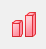
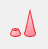

独自の塗りつぶしパターンをパターンギャラリーに追加できます（ヒント: リストの最後に追加されます）。User Filesフォルダ (UFF)を開き、/Patternsフォルダを作成し、更に/Geologyと /Normalを追加します。カスタムパターンのEMF ファイルを適切なサブフォルダに保存します(例: /Patterns/Geology)。これでギャラリーにカスタムパターンが表示されます。
パターンタブは、次の一覧にあるグラフの範囲の塗りつぶし、縁、形状、透過率、諧調塗り色を編集する事ができます。
| 縦棒/2D横棒/面積図/円/ウォータフォール | ボックスチャート |
| グラフの線タブで、曲線以下の塗りつぶしを次のデータプロットまで塗りつぶす - 色の上下に設定すると、作図の詳細ダイアログのパターン_上部、パターン_下部タブが表示され、上と下の領域を個別にカスタマイズできます。 |
| 3D縦棒/3Dウォール/3Dリボン | 3Dウォータフォール |
| 接続 （3Dウォーターフォールのみ) |
線の接続タイプを指定します。 接続タイプの詳細については接続をご覧ください。 |
|---|---|
| 色 |
境界の色を選択します。色でなしを選択すると、パターンの塗りつぶしを縁なしにすることができます。 色の選択については、 データプロットの色を編集する をご参照ください。 |
| 線種 |
線の種類を選択します。ボックスチャートの場合、...ボタンをクリックしてカスタム破線ダイアログを開き、破線をカスタマイズできます。 |
| 太さ |
線の太さを入力または選択します。 線の幅はポイントを単位とし、１ポイント＝ 1/72インチとなります。 |
| 端線を表示 (3D ウォータフォールのみ) |
ウォータフォールグラフの端の線を表示します。このチェックを付けると、基線を表示チェックも選択できるようになります。 |
| 基線を表示 (3D ウォータフォールのみ) |
ウォータフォールグラフのベースラインを表示します。
|
|
Note: 破線のパターンは、｢オプション｣ダイアログボックス(｢ツール：オプション｣)のグラフタブにある、Originの破線の種類グループで編集できます。 |
塗り色を指定します。透明に表示するには、なしを選択します。色の選択については、 データプロットの色を編集する をご参照ください。自動を選択した場合、Originは塗りつぶし色に境界色の薄いほうを利用します。
グループ化ボックスチャートの場合、このオプションを使ってボックスの塗り色に列ラベル行を使ったカラーマップを設定できます。自動にすると、列番号を使って塗り色のカラーマップを設定します。
カラーマップにチェックを付けた場合、塗りつぶしの色が利用できなくなります。
カラーセレクタと同様のパターンセレクタを使用してパターンを塗りつぶす方法を指定します。
独自の塗りつぶしパターンをパターンギャラリーに追加できます（ヒント: リストの最後に追加されます）。User Filesフォルダ (UFF)を開き、/Patternsフォルダを作成し、更に/Geologyと /Normalを追加します。カスタムパターンのEMF ファイルを適切なサブフォルダに保存します(例: /Patterns/Geology)。これでギャラリーにカスタムパターンが表示されます。 |
全ての棒、スライス、領域を塗りつぶすためにデフォルトパターンリスト、標準または地質学からパターンを選択します。
地質学を選択すると、パターンの編集を行う以下のコントロールが表示されます。
選択されたパターンを適用する2つのモード、全体に合わせると比率があります。
このタブのオプションでは以下の設定が可能です。
このタブの選択によって、パターンリストタブが表示されます。
このタブはグループ化プロットでのみ利用できます。グループ化されたプロットを推移させるには、パターンリストを選択します。
塗りつぶしパターンを選択すると、｢パターンの色｣ボタンが有効になります。このボタンをクリックすると、選択したパターンの色を設定するために使用できるカラーセレクタが開きます。
自動を選択した場合、Originは塗りつぶし色に境界色の薄いほうを利用します。
塗りつぶしパターンで線の太さを指定します。 線の幅はポイントを単位とし、１ポイント＝ 1/72インチとなります。
チェックを付けると棒グラフにライティング効果を追加します。サイドは暗くなります。
現在のプロットの塗りつぶしの色が設定されている場合、このグループコントロールでパターン色をグラデーションできます。
階調色のモードを指定します。
その他の色モードを選択すると、Y値によるまたはZ値によるチェックボックスが表示されます。
デフォルトでは、グラデーションの塗りつぶしは、現在のプロットのYの最大値に従って適用されます。Y値によるまたはZ値による ボックスにチェックを付けると、各データポイントのY/Z値に応じて、Y軸方向またはZ軸方向に沿って塗りつぶしの色が徐々に変化します。
面積、ウォーターフォールグラフなど、一部の特殊なグラフタイプでは、このチェックボックスは表示されません。
これはモードが1色になっている時のみ利用できます。 スライダを使用して、黒から白への階調色の明るさ(%単位)を変更します。
これは モードが2色になっている時のみ利用できます。 階調を作るのに使用する2つめ色を選択します。
Note: 2Dグラフでは、モードが2色の場合、2番目の色を設定する際に単一色およびポイント毎タブの両方でカラーチューザーを使用できます。3Dグラフの場合、モードが2色の時に2番目の色の設定で単一色タブでのみカラーチューザーを使用できます。
色の選択については、 データプロットの色を編集する をご参照ください。
これは モードがその他の色になっている時のみ利用できます。塗りつぶし領域に色の変更を適用するパレットを選択します。
パレットによるグラデーション塗りつぶしが適用された場合、プロットをクリックし、ミニツールバーの塗り色ボタンを使用して、パレットリストから別のパレットを選択できます。
これはモードが1色、2色、その他の色になっている時に利用できます。 塗りつぶしの色が徐々に変化する方向を指定できます。
Y/Z値によるにチェックを付けると、上 下と 下 上の方向のみが使用可能になります。
極座標の放射棒グラフの場合、Originは、色を徐々に塗りつぶす方向について以下の設定が可能です。
塗りつぶし領域を透過させます。スライダを動かすか、0（透過なし）から100（完全透過）の整数を入力します。
線 タブの次のデータプロットまで塗りつぶす-色の上下を選択した場合は、2番目のパターンタブが追加され（パターン_下）、独自の透過度コントロールが適用されます。デフォルトでは自動がチェックされていてパターン_上 タブの透過設定に従います。
色付き面積グラフと2Dウォーターフォールでは、線の透過に従うにチェックを入れて線の透過設定を適用します。
透過率の設定を塗りつぶしのみに適用します。境界線の透過率は0になります。これは、縦棒/横棒グラフ、ボックスチャート、円グラフで設定できます。
色付き面積グラフと2Dウォーターフォールでは、線の透過に準じるのチェックを外した場合のみ使用できます。
3D棒グラフには、6つの形状があります。
|  |  | ||||
| 角柱/直方体 | 円柱 | 三角錐 | 三角錐台 | 円錐 | 円錐台 |
形状ドロップダウンリストで、
| Note: 「アウトライン」タブで、棒の幅をカスタマイズして、「形状リスト」タブで形状リストを作成/カスタマイズ/ロードします。 |
現在の設定での表示をこのボックスに示します。